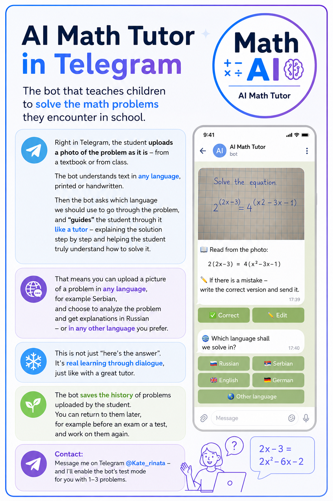

AI Math Tutor
✅ AI combined with specialized math software
✅ Built specifically for school mathematics
Designed for mathematics first — not generic conversation.
🚀 Open in Telegram
AI Math Tutor is currently in its final testing phase.
Every new user receives 3 free math tasks to try the system.
If you encounter an incorrect solution or explanation,
send us screenshots of the issue —
and we will add 3 additional free tasks to your account.
Your feedback helps improve the quality of explanations
and train the system on real student problems.
Early access pricing is currently available for initial users.
A student sits with a math problem, unsure how to even begin.
They open different AI tools, try various prompts,
compare conflicting answers,
and spend more time fighting the interface than learning mathematics.
Generic AI systems may skip steps,
hallucinate calculations,
or explain things in ways students simply do not understand.
AI Math Tutor is built differently.
Instead of relying on raw chatbot output,
the system combines advanced language models with specialized mathematics software,
creating a hybrid AI workflow designed specifically for education.
Explanations are structured to guide reasoning step-by-step,
helping students understand not only the answer —
but how to think through the problem itself.
Before
❌ Stuck on homework
❌ Trying multiple AI tools
❌ Comparing conflicting answers
❌ Wasting time verifying solutions
❌ Still not understanding the reasoning
After
✅ AI combined with specialized math software
✅ One focused tutoring workflow
✅ Clear step-by-step explanations
✅ Less time checking different answers
✅ Real mathematical understanding
Since square roots require nonnegative expressions:
4x − y² ≥ 0
y + 2 ≥ 0
4x² + y ≥ 0
Now we simplify step-by-step...
1. Upload
Take a photo of a handwritten or printed math problem.
2. Understand
AI recognizes the task and interprets mathematical structure.
3. Verify
Specialized mathematics software helps validate calculations and logic.
4. Explain
The student receives understandable step-by-step reasoning.